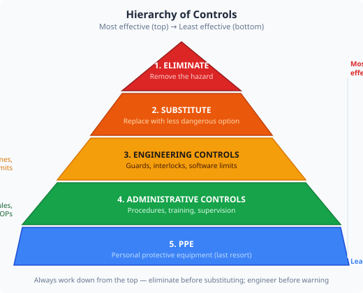
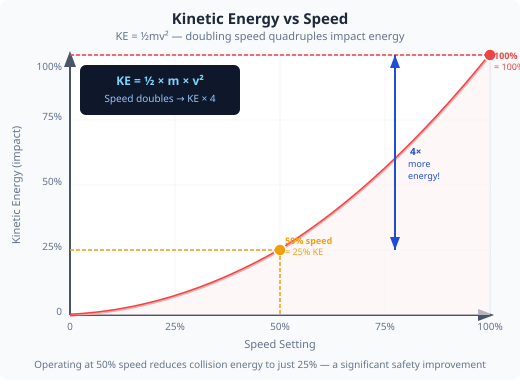

How international standards shape robot design, and how to apply systematic safety thinking to the arm you are using.
Industrial robots are governed by a hierarchy of international standards. These define how robots must be designed, installed, and operated to protect workers:
| Standard | Scope |
|---|---|
| ISO 10218-1 | Robot design and manufacture — what the robot builder must provide |
| ISO 10218-2 | Robot installation and work cell — what the integrator must ensure |
| ISO/TS 15066 | Collaborative robots (cobots) — force and speed limits for human contact |
| EN 60204-1 | Electrical safety of machines — wiring, guarding, emergency stop design |
| PUWER 1998 | UK law — Provision and Use of Work Equipment Regulations |

When designing for safety, engineers work through a priority hierarchy — eliminating hazards is always preferred over warning about them:
In this arm, the Dead Zones tab provides an engineering control (level 3). Your lab rules about not reaching into the operating envelope are administrative controls (level 4).

One of the most important safety parameters in any robot is how fast it moves and how much force it can exert. These two quantities determine the severity of a collision:
Energy = ½ × m × v² Force = m × a
Doubling the speed quadruples the kinetic energy at impact. This is why cobots under ISO/TS 15066 have strict speed limits when humans are nearby.
Reducing maximum joint speed (via the Settings tab or G-code feed rate F parameter) reduces both cycle time and collision energy.
The ST3215 servos have a hardware current limit built into the servo IC — this caps the force the joint can exert. There is no current-limit slider in the Settings tab; the closest software-accessible safety control for overload is the speed limit.
Carry out a systematic safety review of the arm setup in your lab, applying the hierarchy of controls.
| Hazard | Who is at risk | Existing controls | Hierarchy level | Residual risk |
|---|---|---|---|---|
In UK law (Health and Safety at Work Act 1974, PUWER 1998), employers have a duty to ensure that work equipment is safe. But the engineer who designs the system shares moral — and sometimes legal — responsibility for how safe it is to use.
The hierarchy of controls, risk assessments, and safety standards exist because history has shown that relying on people to "be careful" is not enough. Engineering out the hazard is always better than managing it with rules and warning signs.
Think about: If you were asked to deploy this arm in a public exhibition where members of the public (including children) could get close to it, what additional controls would you need? At which levels of the hierarchy?
1. According to the hierarchy of controls, which approach is always preferred first?
2. Doubling a robot's speed increases the kinetic energy at impact by a factor of:
3. Software dead zones in the app are an example of which hierarchy level?